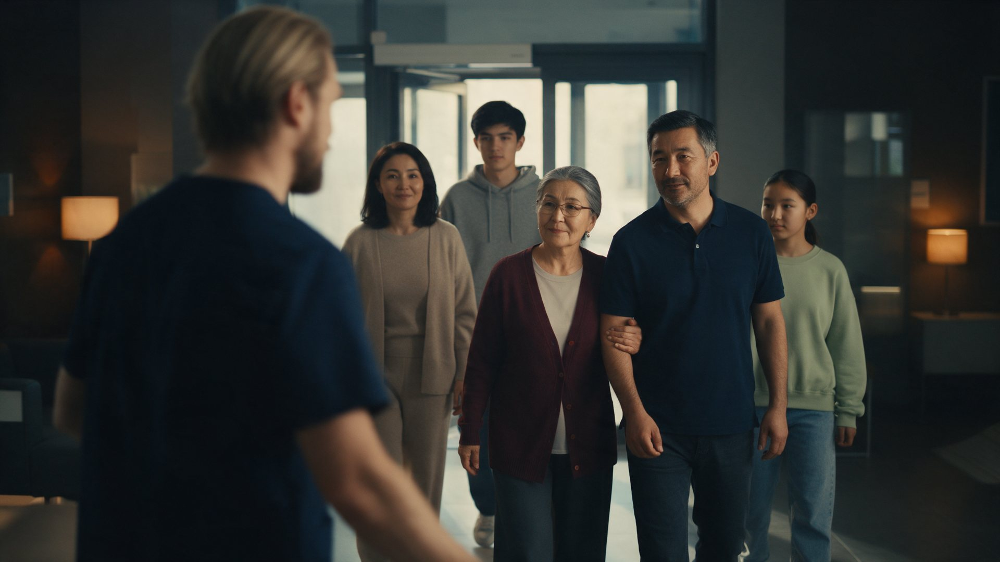
Одна семья, один визит — вся клиника. Три поколения приходят в «Медест» вместе, и каждый находит здесь своего специалиста.
Что мы снимаем, про кого и в каком настроении. Написано так, чтобы читалось без киношных терминов.
Медицинский центр «Медест», Бишкек. Широкопрофильная клиника: терапия, педиатрия, ортопедия, косметология, реабилитация — ЛФК и кинезиотерапия.
В «Медест» есть врач для каждого — от новорождённых до людей преклонного возраста, включая тех, кто восстанавливается после болезни или травмы. Одна клиника для всей семьи.
Имиджевый ролик 1:30, горизонтальный 16:9, с закадровым голосом. Из полной версии режутся короткие — 30 и 15 секунд для соцсетей.
Не болезни, а заботу: как встречают, как объясняют, как помогают. Врачи заняты делом, пациенты — живые люди, а не модели.
Все сцены с героями — внутри клиники: холл, кабинеты, залы. Финал — в студии на белом фоне.
Гости клиники всех возрастов и её сотрудники. Одежда пациентов обычная, бытовая, без привязки к сезону. Врачи — в сдержанной удобной форме.
Мужчина 30 лет (славянин, светлые волосы, аккуратная борода) и женщина 28 лет (азиатка, тёмные волосы в низкий пучок). Тёмно-синяя форма.
Врач 45 лет, короткая стрижка, очки, белый халат. Медсестра 35 лет в голубой форме и шапочке.
Мужчина 32 лет, спортивный, тёмно-синяя спортивная форма с логотипом клиники.
Женщины 38 и 25 лет, белая форма, шапочки.
Мужчина 50 лет, седеющие волосы, очки, белый халат.
Женщина 30 лет, тёмные волосы в хвост, спортивная форма.
Женщина 40 лет, белый халат, стетоскоп. Появляется в финале — «от новорождённых».
Два цвета: тёмно-синий у администраторов и инструкторов, голубой/белый у медперсонала. Один тёплый акцент — бордовый.
Стеклянные двери, стойка, растения, мягкий свет.
Кушетка, стол с монитором, тонометр, настольная лампа.
Коврики, мячи, шведская стенка, большое окно.
Кушетка, лампа-лупа, приглушённый свет.
Макет позвоночника, корсет на стойке, плакат стопы, кушетка.
Подвесные петли, тренажёры, светлый.
Переход между кабинетами — и между сценами.
Студия, ровный мягкий свет. Финальная сцена с командой.
Тёплый, спокойный, без рекламного нажима. Никто не улыбается в камеру до самого финала. Ощущение, что мы подсмотрели настоящий день клиники.
Мягкий дневной свет из окон и тёплые лампы прямо в кадре. Много воздуха и тени, никакого «стерильного» белого света.
Приглушённая палитра: синяя форма, белые халаты, светлые стены. Бордовый кардиган бабушки — единственный тёплый акцент, он проходит через весь ролик.
Ролик читается как один непрерывный проход по клинике: камера уходит за плечо или дверной проём — и выходит уже в следующем кабинете.
Разработанные кадры и сцены. На каждый кадр — изображение, что в нём происходит и текст закадрового голоса.
Наблюдаем, а не ставим. Камера всегда в лёгком движении, длинная оптика, малая глубина резкости. До финала никто не смотрит в объектив.
Почти без прямых склеек: переходы через спину, плечо, лампу или дверной проём. Ролик читается как один проход по клинике.
Тёплый спокойный мужской голос. Живые шумы кабинетов: шаги, щелчок тонометра, дыхание, скрип петель. Сдержанное фортепиано и струнные под голосом.
Холл Medest, за стеклянными дверями дневной свет. Входит семья: бабушка под руку с отцом, за ними мама, сын и дочь. Администратор идёт им навстречу — мы видим его со спины.
«В Medest приходят всей семьёй».
С рук, медленный облёт администратора по дуге. Шаги, дверь, тихий гул холла.
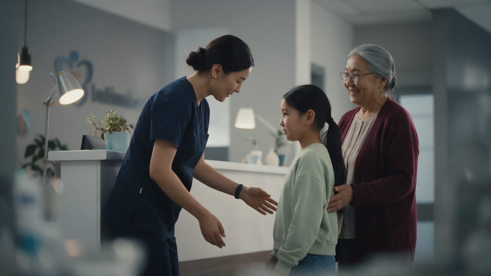
Администратор выходит из-за стойки, наклоняется к дочке и здоровается. Бабушка стоит рядом и улыбается.
«Потому что здесь есть врач для каждого —»
Плавный проезд к профилю администратора. Приветствие слышно приглушённо, без слов.
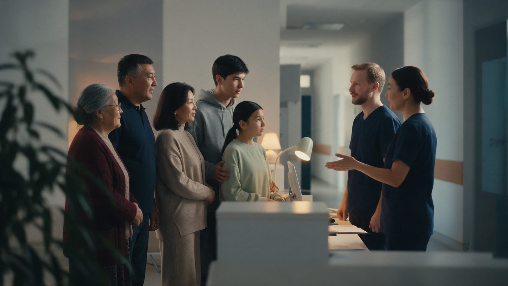
Семья у стойки вместе с обоими администраторами. Администратор открытой ладонью приглашает пройти к кабинетам.
«от первых дней жизни до почтенного возраста».
Общий план, лёгкий наезд. Переход — за спину проходящего сотрудника.
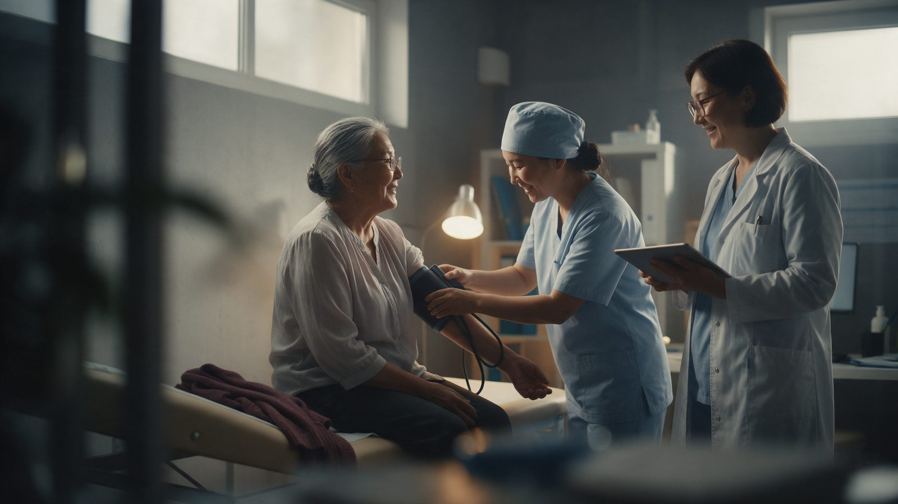
Кабинет терапевта. Бабушка сидит на кушетке, бордовый кардиган лежит рядом. Медсестра надевает манжету тонометра, врач с планшетом стоит рядом — все трое смеются.
«Мы бережно заботимся о здоровье старших:»
Гимбал, мягкий наезд. Смех, шорох манжеты.
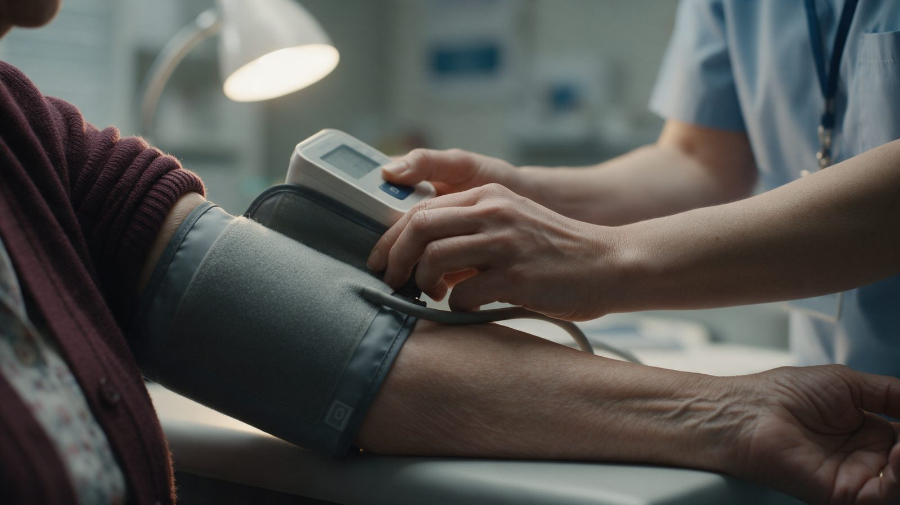
Манжета на руке бабушки, пальцы медсестры нажимают кнопку тонометра. Лиц не видно.
«измеряем давление и температуру,»
Макро, почти статично. Крупный звук: щелчок кнопки, шипение манжеты.
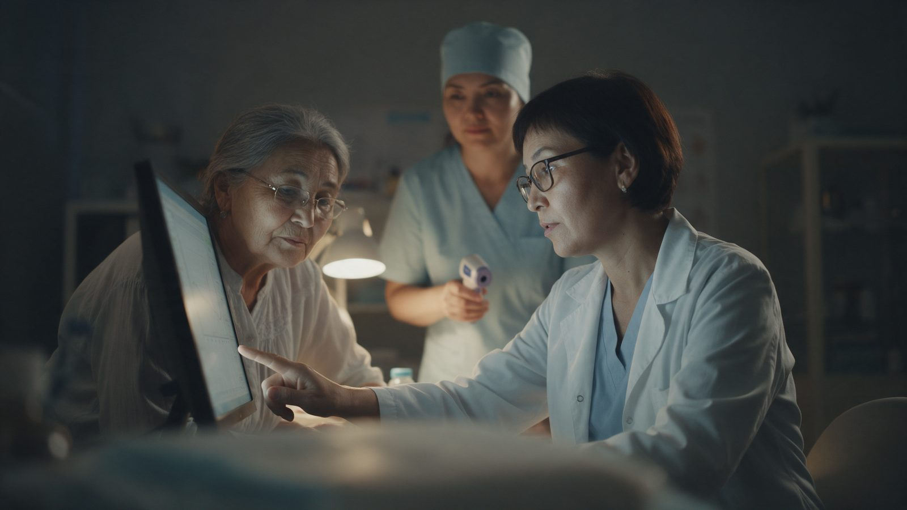
Врач показывает бабушке цифры на мониторе. Медсестра за ними держит бесконтактный термометр. Бабушка внимательно слушает.
«и всегда спокойно объясняем, что они значат».
Медленный проезд вдоль стола. Холодный свет монитора, тёплая лампа.
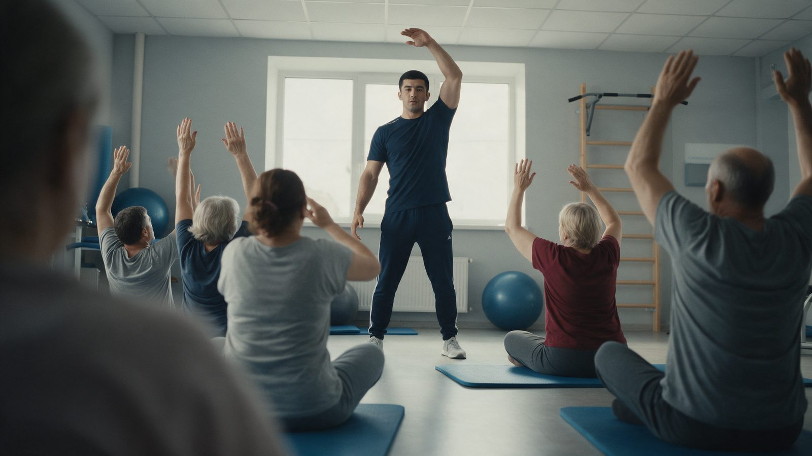
Светлый зал ЛФК. Инструктор показывает упражнение, группа пациентов разного возраста повторяет за ним.
«Лечебная физкультура в группе помогает вернуть движение и уверенность —»
С рук, проход сквозь группу; на переднем плане плечи пациентов. Счёт инструктора, дыхание, шорох ковриков.
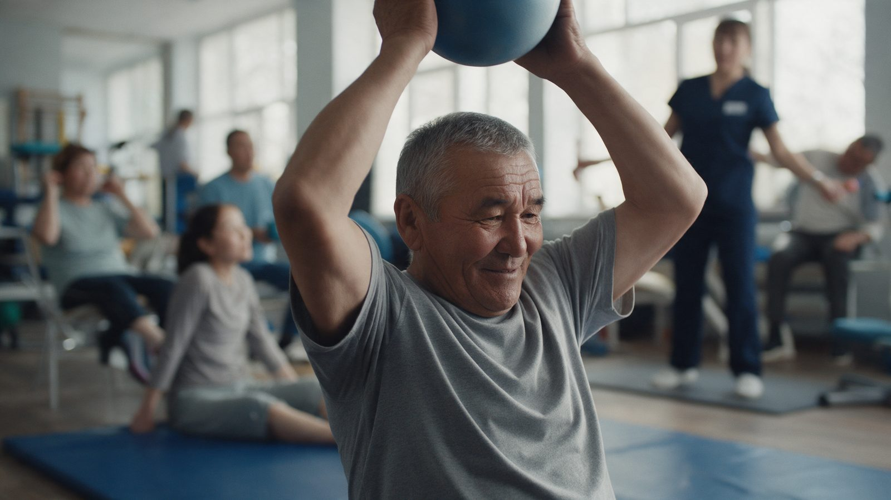
Пожилой пациент поднимает мяч над головой — усилие и улыбка. Позади сотрудница помогает другому пациенту.
«под присмотром опытных инструкторов».
Средний план, камера чуть ниже глаз. Выдох, короткий смешок.
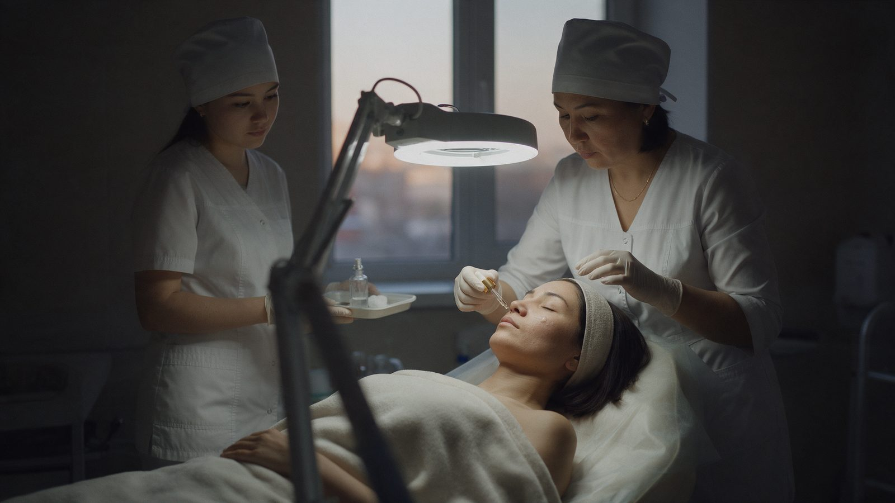
Кабинет косметологии, приглушённый свет, лампа-лупа. Мама лежит на кушетке с закрытыми глазами. Косметолог наносит сыворотку, ассистентка держит поднос.
«А ещё здесь можно просто позаботиться о себе — косметология с медицинским подходом».
Медленный наезд мимо штатива лампы. Тишина кабинета, звон флакона.
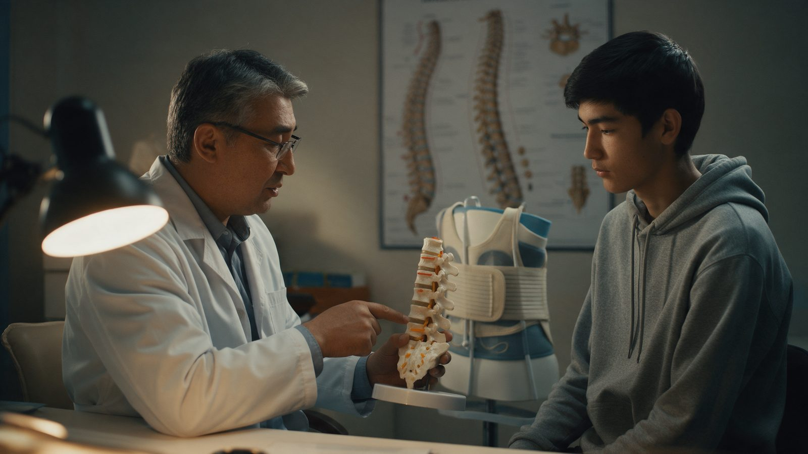
Ортопед держит макет позвоночника и показывает сыну, как корсет поддерживает спину. Корсет стоит рядом. Сын внимательно слушает.
«Если беспокоит спина, ортопед найдёт причину и объяснит, как ей помочь,»
Проезд от лампы на переднем плане к лицу сына. Голос врача неразборчиво.
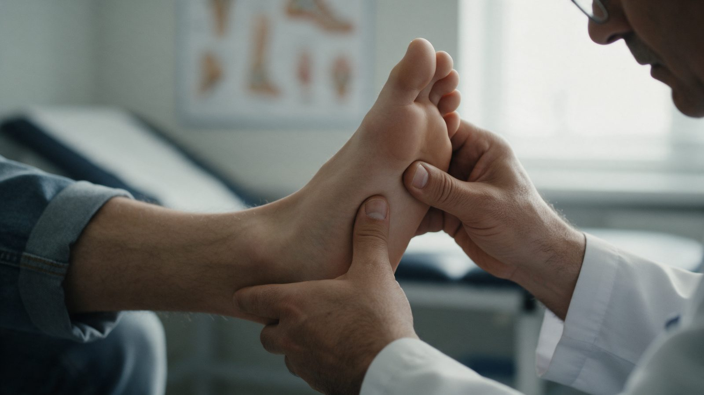
Врач держит стопу сына и большим пальцем проверяет свод.
«ведь осанка начинается со стоп».
Макро, почти статично. Тихо, шорох ткани.
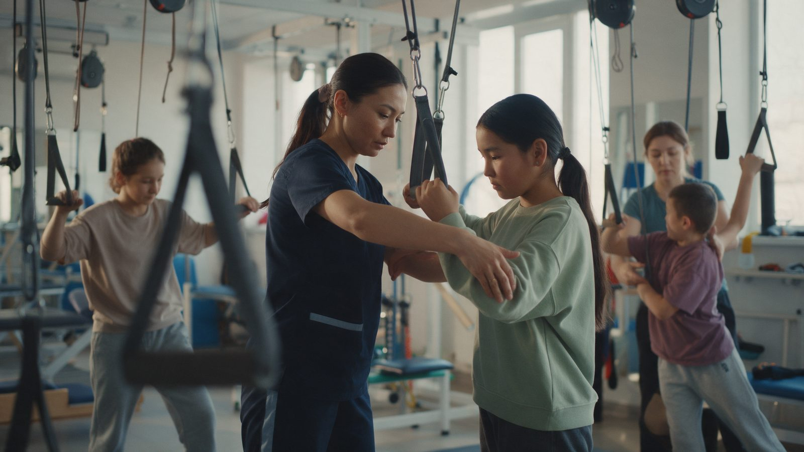
Светлый зал с подвесными петлями. Специалист поправляет дочке положение рук, вокруг занимаются другие пациенты.
«Кинезиотерапия укрепляет тело и помогает восстановиться после травм —»
С рук, между петлями; петли на переднем плане. Скрип тросов, шаги.
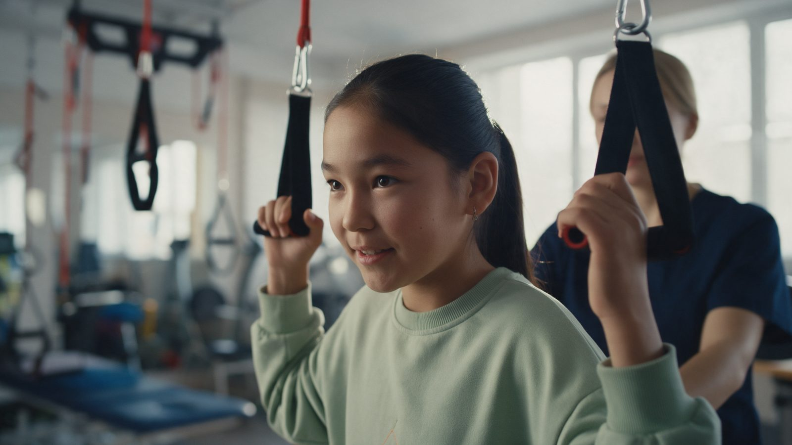
Лицо дочери: сосредоточенность сменяется улыбкой. Сзади — специалист.
«в любом возрасте».
85 мм, контровой свет в волосах, камера замирает. Пауза в голосе, музыка поднимается.
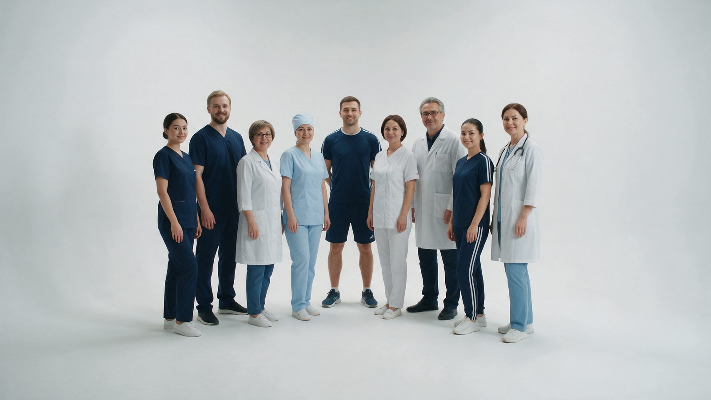
Белая циклорама, статичный план. Сотрудники клиники по одному входят в кадр и занимают свои места, пока не соберётся вся команда. Все смотрят в камеру.
«Мы — команда Medest. Разные специалисты, одна забота — ваше здоровье».
Штатив, статика. Девять резов, в каждом в кадре на одного человека больше. Музыка на пике.
Из белого фона циклорамы — в белый фон пэкшота, без склейки. Голос: «Medest. Здоровье всей семьи — в одном месте».
| 0:00–0:14 | В Medest приходят всей семьёй. Потому что здесь есть врач для каждого — от первых дней жизни до почтенного возраста. |
| 0:14–0:26 | Мы бережно заботимся о здоровье старших: измеряем давление и температуру, и всегда спокойно объясняем, что они значат. |
| 0:26–0:37 | Лечебная физкультура в группе помогает вернуть движение и уверенность — под присмотром опытных инструкторов. |
| 0:37–0:45 | А ещё здесь можно просто позаботиться о себе — косметология с медицинским подходом. |
| 0:45–0:57 | Если беспокоит спина, ортопед найдёт причину и объяснит, как ей помочь, — ведь осанка начинается со стоп. |
| 0:57–1:08 | Кинезиотерапия укрепляет тело и помогает восстановиться после травм — в любом возрасте. |
| 1:08–1:22 | Мы — команда Medest. Разные специалисты, одна забота — ваше здоровье. |
| 1:22–1:30 | Medest. Здоровье всей семьи — в одном месте. |
Ролик, по которому выстроены ритм, подача и приём монтажа. Людей, локации, текст и музыку не копируем.
OMA — «Doctors. We lead you to better health» (2020), Ontario Medical Association. Режиссёр Duane Crichton, Revolver Films; агентство Yield Branding.
Смотреть на YouTube · на Vimeo · о кампании